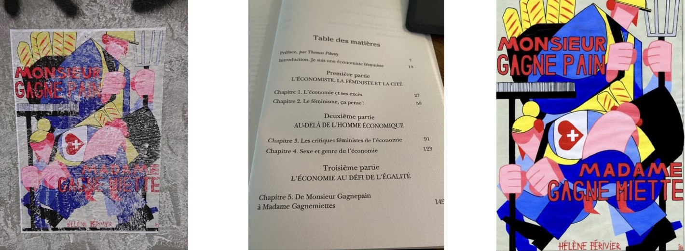

I am a researcher in economics in the OFCE at Sciences Po.
My research focuses on evaluation of family, social and tax policies, and on the analysis of gender inequalities in the labour market, in the family and in higher education. I am also interested in the history of economic thought with a feminist perspective.
I am the director and the co-founder of the gender studies program of Sciences Po, PRESAGE. Since April 2023, I am the president of the High Family Council in the Haut Conseil de la famille de l’enfance et de l’âge, HCFEA. This Council aims at fostering and leading public debate on family issues and public policies in the French context.
Just released
- New version ->“De Sciences Po à l’ENA, la voie étroite vers les sommets de la fonction publique: L’effet croisé du genre et de l’origine sociale”, Working Paper OFCE n° 14/2023, with Maxime Parodi and Fabrice Larat, 2023.
- “Where are the Fathers? The Effects of Earmarking Parental Leave on Fathers in France”, with Grégory Verdugo, Industrial & Labor Relations Review, septembre 2023, working paper -> here
In the media
France Inter, Le téléphone sonne -> Pourquoi la France fait-elle moins de bébés?, (27 octobre 2023).
Un Nobel à soi: Claudia Goldin ou l’économie féministe , Entendez-vous l’éco?, France Culture, (Octobre 2023)
on the same topic in The Conversation -> « Nobel » d’économie : Claudia Goldin et l’émancipation des femmes américaines
Podcast Genre etc. Faire de la recherche en féministe, discussion with Geneviève Fraisse, (Septembre 2023).
My latest book

In the streets of Nantes (FR), this poster displays the female crumbswinner model (that echos to the male breadwinner model), concept that I develop in my research, in particular in the Chapter 5 of my book L’économie féministe -> Thanks to the artist for disseminating ideas!
